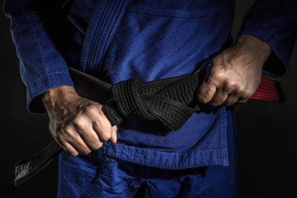
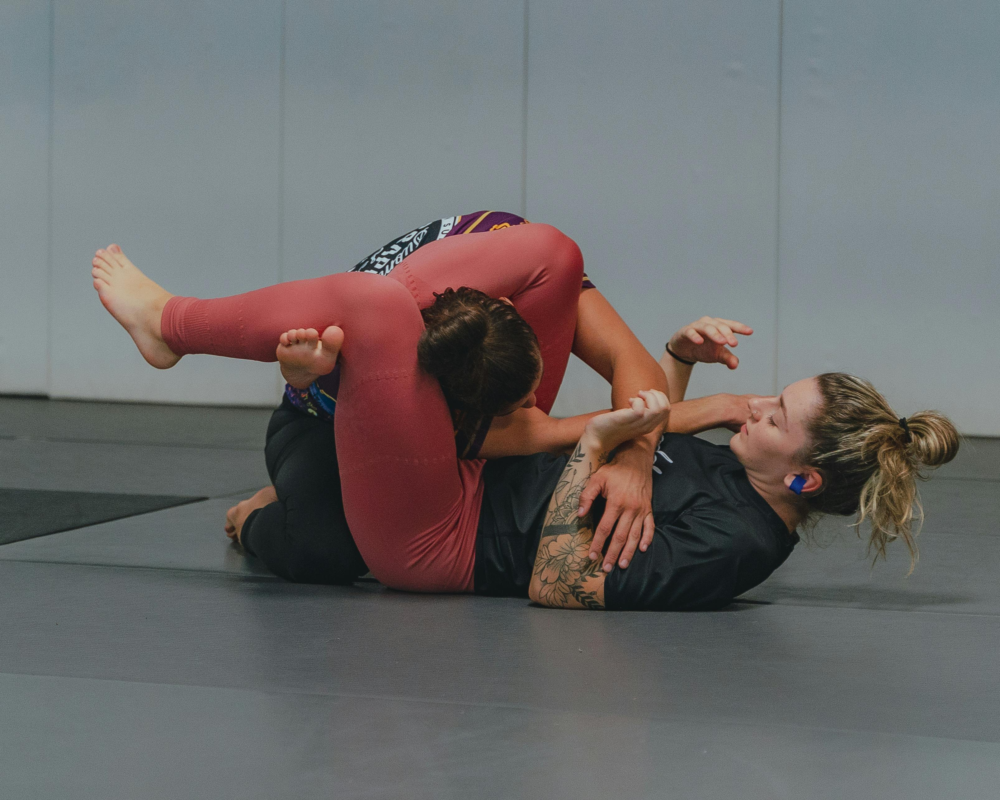

Our Classes
Brazilian Jiu-Jitsu
Jiu-Jitsu is a martial art that is practiced in a gi, and is designed to apply leverage and momentum through a system of techniques, that can allow a smaller or weaker practitioner to defeat a larger opponent.
It is an art form that consists primarily of grappling techniques, and aims to bring an opponent to the ground, and subdue or submit them, while taking as little damage as possible.
No-Gi Jiu-Jitsu
Traditionally, Jiu-Jitsu is practiced in a gi, or kimono.
However, the rise of MMA and professional no-gi competitions have given more popularity to practicing jiu-jitsu without a gi on.
We find that both styles are enjoyable and equally applicable in self defense and competition scenarios, so we practice both!
Kids Jiu-Jitsu

The goal of our youth jiu-jitsu program is to teach your children to defend themselves, all while helping to keep them healthy, happy, and having fun!